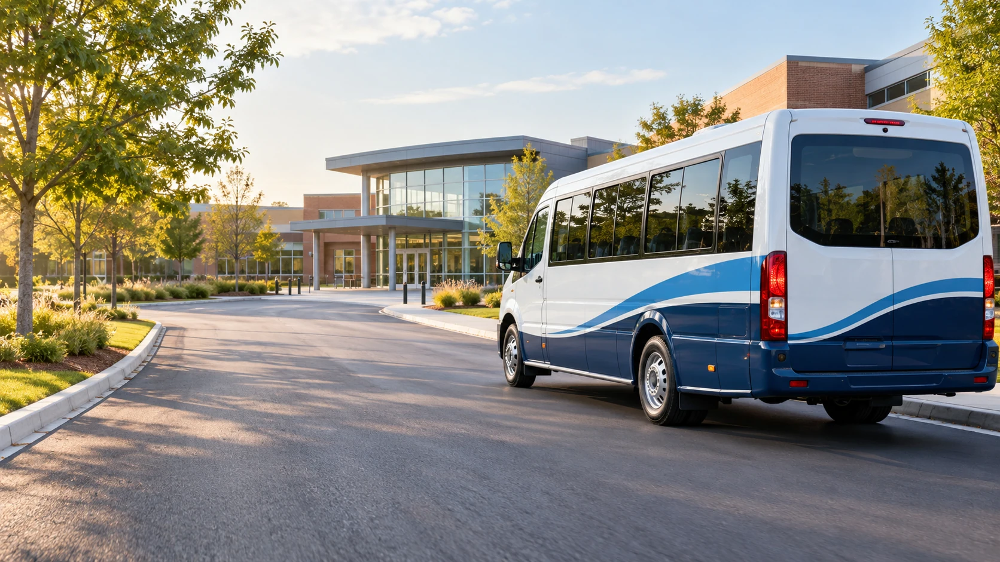
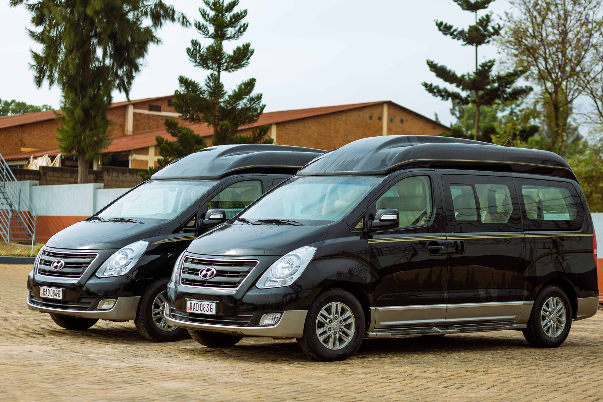

A named pickup point
Know where to meet the bus, with a clearly described stop and collection point.
DAILY SCHOOL TRANSPORT
Morning hellos, afternoon homecomings, and a school-day routine that feels a little more settled.
Explore this service
HOME TO SCHOOL. SCHOOL TO HOME.THE LITTLE DETAILS, IN FOCUS
A return journey brings both ends of the school day into one clear plan. Explore assigned routes, convenient meeting points and the little details that help mornings run more smoothly.
Know where to meet the bus, with a clearly described stop and collection point.
See the planned pickup, school arrival and homeward departure schedule.
Agree who meets your child and how any collection changes are confirmed.
A SIMPLE WAY TO GET STARTED
Start with the practical details and explore the options that work with your school-day routine.
Look for your school and neighbourhood in Routes & Coverage.
Check the morning stops and afternoon school departure time.
Use the parent space for route information, attendance and fees.
FOR THE JOURNEY AHEAD
A familiar greeting and a clear boarding routine can help children settle into the journey. Take a look inside a contemporary passenger cabin.
The daily return plan includes a morning journey to school and an afternoon journey home. Final stop arrangements and service availability should be agreed before enrolment.
Open a route on Routes & Coverage to see each sample pickup time and planned school arrival. Afternoon departure is shown in the route details.
Confirm the pickup point, authorised collectors, school schedule, contact channels and any travel support arrangements directly with the school and operator.
THE NEXT LITTLE STEP
Start with your neighbourhood and explore the daily route that fits your school day.
Find your daily route